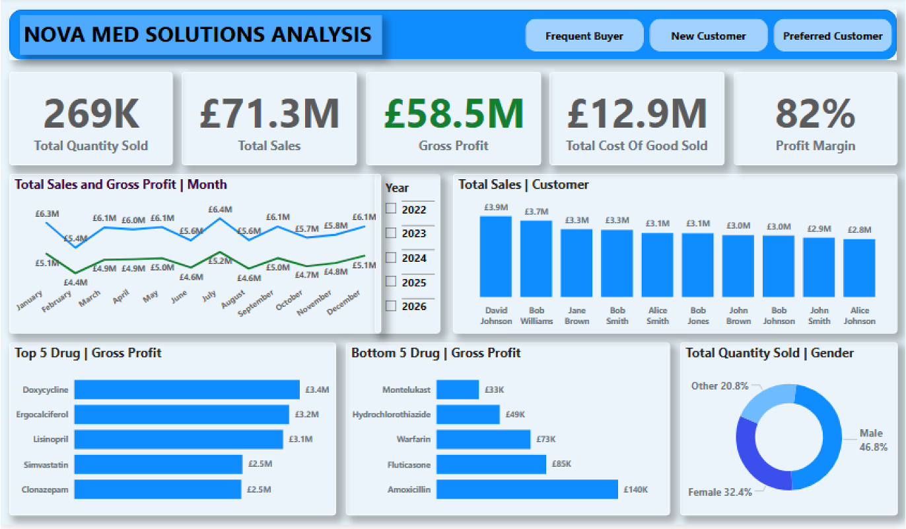
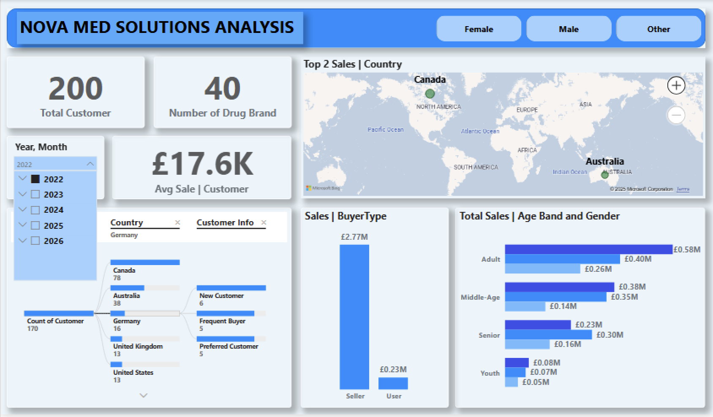

Sales Performance & Customer Insights Analytics
Client: NovaMed Solutions | Industry: Pharmaceutical Distribution | Tool: Power BI
An end-to-end Power BI solution providing visibility into sales performance, product profitability, and customer behaviour for a pharmaceutical distributor.


Tip: Swipe/trackpad left-right or click the dots to view the next dashboard.
1. Business Problem
NovaMed Solutions was accumulating large volumes of sales data but lacked the infrastructure to derive meaningful insight from it. Demand forecasting was unreliable. Inventory planning was reactive. And commercial decision-making was constrained by the absence of a centralised view of product performance, customer value, and margin drivers.
The business needed a solution that could answer:
- Which products are driving revenue and profit — and which are eroding margins?
- Who are the most valuable customers, and which segments are underperforming?
- Where are the geographic and demographic concentrations of demand?
2. Data Overview
- Sales Data: Transaction records, revenue, quantities sold, time series by month and quarter
- Drug Data: Product name, pricing, production cost, treatment category
- Customer Data: Customer ID, buyer type, age group, gender, country
GDPR Note: Customer data was anonymised at source using ID references only. Demographic and geographic analysis was conducted at aggregate segment level, not individual customer level. All analysis complies with GDPR data minimisation principles.
3. Data Cleaning & Preparation
What Was Removed
- Duplicate transaction records identified through Sales ID matching
- Records with missing product cost data that could not be used in margin calculations
What Was Transformed
- Sales and cost data modelled into relational tables with defined Power BI relationships
- Date table created to enable consistent time intelligence across all measures
- Customer demographics recoded into clean segments for aggregation
New Calculated Fields (DAX Measures)
- Total Revenue: SUM of all transaction values
- Cost of Goods Sold (COGS): SUM of production costs across sold units
- Gross Profit: Revenue − COGS
- Profit Margin (%): Gross Profit ÷ Revenue × 100
- Top N / Bottom N Rankings: Dynamic DAX ranking logic for products and customers
4. Data Analysis
Key KPIs Tracked
- Total Revenue
- Total Profit and Profit Margin (%)
- Cost of Goods Sold (COGS)
- Quantity Sold
Key Trends & Patterns
- Month-over-month analysis reveals consistent revenue growth trends punctuated by seasonal fluctuations — patterns that had not previously been documented.
- A small number of products account for the majority of profit, while several low-margin drugs generate revenue without meaningful commercial contribution.
- A defined group of high-value customers accounts for a disproportionate share of total revenue — a classic concentration risk warranting dedicated account management.
- Revenue concentration is visible in specific buyer types and countries, with clear underrepresented segments representing expansion opportunities.
Insights
- Product concentration is both a strength and a risk. Top-performing drugs drive the majority of profit efficiently — but dependence on a small portfolio creates vulnerability if demand shifts or supply is disrupted.
- Low-margin products are not neutral. Products generating revenue at thin or negative margins consume operational capacity that could be redirected to higher-performing lines.
- High-value customer concentration is a retention risk. If a small number of accounts represent a large share of revenue, losing one or two could have disproportionate financial impact.
- Demographic and geographic gaps represent growth opportunities. Underrepresented buyer types and geographies are not absence of demand — they are markets that have not yet been effectively reached.
5. Recommendations
- Conduct a product portfolio review to identify and phase out consistently low-margin drugs, reallocating operational capacity to high-performing products.
- Implement a key account management programme for the top-tier customer segment, with dedicated relationship managers and proactive engagement strategies.
- Use seasonal demand patterns to build a rolling 12-month inventory plan, reducing both stockout risk and overstock carrying costs.
- Develop targeted outreach strategies for underrepresented geographic and demographic segments, informed by the characteristics of existing high-value customers.
6. Limitations
- The analysis is based on historical transactional data — external factors such as regulatory changes, competitor activity, or supply chain disruptions are not captured.
- Customer data is limited to demographics and transaction history; behavioural data such as purchase frequency or brand loyalty is not available.
- Production cost data is assumed to be stable across the period; real-world cost volatility would affect margin calculations.
- Top N / Bottom N analysis is relative — rankings will shift as the product and customer portfolio changes over time.
Business Impact
For NovaMed's commercial and strategic teams, the Power BI dashboards replaced guesswork with evidence. Product decisions can now be grounded in margin data. Customer relationships can be managed with an understanding of relative value. Inventory planning can be aligned with seasonal demand rather than reactive to it. These capabilities represent a meaningful step change in how the business uses data to drive performance.
Skills Demonstrated
Power BI • Data Modelling • DAX • KPI Design • Ranking Logic • Customer Analytics • Data Storytelling